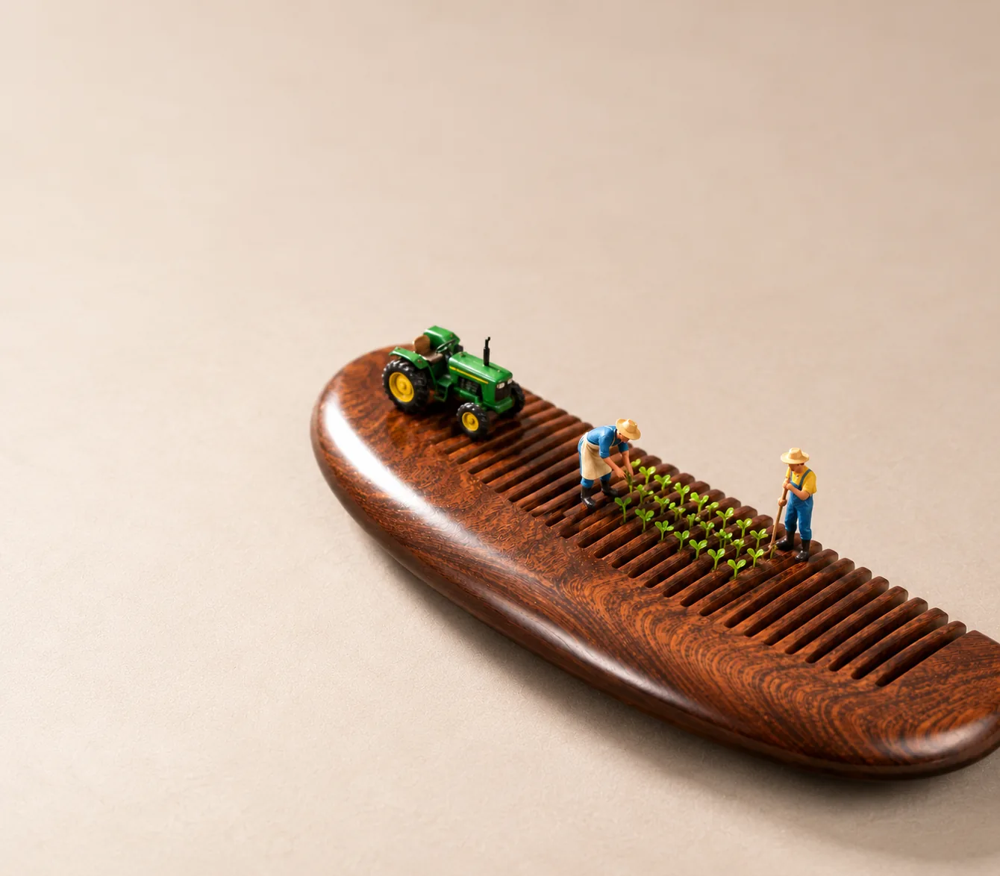

回形针 · 跨栏赛
运动会决赛。领跑的选手已经腾空过栏，后面两人咬得很紧。

平凡的木梳，
也能长出一片生机盎然的田野。
SELECTED WORK
精选作品。
点开看大图。
运动会决赛。领跑的选手已经腾空过栏，后面两人咬得很紧。
一支铅笔跨过书沟，三位行人在纸页之间过桥。
看创作过程 →度假酒店的豪华房型：每位客人一个私人泳池，谁也不挤谁。
柄环跑道上的接力赛，三名选手沿环奔跑，终点旗已经举起来了。
柠檬味的球场，最后一秒出手，球正悬在篮筐上方。
刀面上新开的雪道。单板滑雪的人一路刻出雪痕，同伴拄着雪杖在刀轴旁等他。
THE CONNECTION MATTERS
因为杯子用过，
才留下这一圈跑道。
故事不必让小人坐在杯子上。咖啡渍是马克杯用过的痕迹，圆圈刚好是一条跑道：孩子沿圈赛跑，奶奶在外面加油，杯子本身原样站在一旁。
判断创意时，我们会追问：换掉这个物件，画面里最有意思的联系还在吗？
看咖啡渍跑道完整教程 →名称输入、当时的策划分工、成图与评价均有说明。
THE CREATIVE PROCESS
从读懂物件，到看懂画面。
四个步骤，组织一次创作。
找到商品值得被
重新看见的特征。
让行动或空间关系
把联想显现出来。
让原物、新角色
和整体美感同时成立。
用可见证据和必要对照，
区分成立、好看与保真。
PLAN THE SHOT
相机放在哪、谁在做什么，
物件的哪个部分成了什么。
只说物件名称，或手上的照片不适合直接用时，整张画面重新生成。
有一张贴近桌面、物件拍得够大、背景干净的实物照时，保留原照，只添加小人和道具。
成图后只问你一句“这是什么场景”，你一眼读出的故事，就是检验。
WHAT THE SKILL DOES
Skill 负责创意，
生成和编辑需要当前环境可用的图像工具。
给一个物品名称或一张商品图就能开始。默认给你两个不同的创意各一张；你有想法就照你的做。只想先看方案，说一声即可。
小人的大小跟物件的部件比，比如“人高约等于一个孔”，看起来才像小人国。
商品照片决定物件长什么样，内置的人偶实拍照让小人更像真的模型。哪张想改，点名那张再改一次。
原图总会保留。想要胶片颗粒或轻微景深，说一声，另存一版。
每个版本实际测了什么、没测什么，写在 发布说明 里。
MAKE YOUR OWN
尚未安装
先在 Codex 或 Claude Code 中安装 Skill。
先用物件名称看文字方案，选中后再生成一张。
没有照片，也可以从马克杯名称教程开始。
已经安装 · 无需照片，先复制这句话
使用 $create-miniature-world，用一个普通马克杯设计微缩摄影。先给我两个文字方案，不要生成图片。
先确认出现文字方案。有生图工具时，再说“按方案1生成一张”；没有时，只要完整提示词即可。Skill 不附带生图额度。
上传的照片和提示会交给你使用的 Codex / Claude Code 及其图像工具处理。仅上传有权使用、可交给这些服务的内容；本网页不接收照片。
WITH APPRECIATION